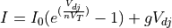

zlel package¶
zlel.zlel_p1 module¶
- zlel.zlel_p1.ErreferentziNodoa(nodes)[source]¶
This function is used to detect if the reference-node is missing.
- Args:
- nodes : a sorted-in-ascending-order np array of the nodes.
- Returns:
- None
- Rises:
- SystemExit.
- zlel.zlel_p1.KonexioBakarrekoNodoak(Aa, nodes)[source]¶
This function is used to detect if any node is floating.
- Args:
- Aa : a np array which represents the incident matrix of the circuit.nodes : a sorted-in-ascending-order np array of the nodes.
- Returns:
- None.
Rises¶
SystemExit.
- zlel.zlel_p1.KorronteIturriakSeriean(cir_el2, cir_nd2, cir_val2, Aa, b)[source]¶
This function is used to detect if Current sources are connected in serial and they break KCL.
- Args:
- Aa : a np array which represents the incident matrix of the circuit.cir_el2: np array of strings with the elements to parse.size(b,n-1). cir_el extendedcir_val2: np array with the values of the elements. size(b,3)cir_val extended.cir_nd2 : np array with the nodes to the circuit. size(b,4).cir_nd extendedb : an integer which contains the number of branches in the circuit.
- Returns:
- None
- Rises:
- SystemExit
- zlel.zlel_p1.TentsioIturriakParaleloan(cir_el2, cir_val2, Aa)[source]¶
This function detects if Voltage sources are connected in parallel.
- Args:
- Aa : a np array which represents the incident matrix of the circuit.cir_el2: np array of strings with the elements to parse.size(b,n-1). cir_el extendedcir_val2: np array with the values of the elements. size(b,3)cir_val extended.
- Returns:
- None
- Rises:
- SystemExit
- zlel.zlel_p1.cir_parser(filename)[source]¶
This function takes a .cir test circuit and parse it into 4 matices. If the file has not the proper dimensions it warns and exit.
- Args:
- filename: string with the name of the file
- Returns:
- cir_el: np array of strings with the elements to parse. size(1,b)cir_nd: np array with the nodes to the circuit. size(b,4)cir_val: np array with the values of the elements. size(b,3)cir_ctrl: np array of strings with the element which branchcontrols the controlled sources. size(1,b)
- Rises:
- SystemExit
- zlel.zlel_p1.getAdarrak(cir_el)[source]¶
This function returns the size of the list of elements obtained from cir_el.
- Args:
- cir_el: np array of strings with the elements to parse. size(1,b)
- Returns
- b : an integer which contains the number of branches in the circuit.
- zlel.zlel_p1.getEl_num(cir_el)[source]¶
This function returns the size of the list of elements obtained from cir_el.
- Args:
- cir_el: np array of strings with the elements to parse.size(el_num,n-1)
- Returns:
- el_num : an integer which represents the number ofelements in the circuit.
- zlel.zlel_p1.getInzidentziaMatrix(n, b, cir_nd2)[source]¶
This function return np array which represents the incident matrix of the circuit.
- Args:
- n : an integer which represents the number of nodesin the “nodes” list.cir_nd2 : np array with the nodes to the circuit. size(b,4).cir_nd extendedb : an integer which contains the number of branches in the circuit.
- Returns:
- Aa : a np array which represents the incident matrix of the circuit.
- zlel.zlel_p1.getMurriztutakoIntzidentziaMatrix(Aa, n)[source]¶
This function return the matrix which will be used to solve the Tableau equations.
- Args:
- Aa : a np array which represents the incident matrix of the circuit.n : an integer which represents the number of nodesin the “nodes” list.
- Returns:
- A : a np array wich represents the reduced matrix o i_mat.
- zlel.zlel_p1.getNodes(cir_nd2)[source]¶
This funcion takes the cir_nd2 matrix and returns a list made up by the nodes of the circuit.
- Args:
- cir_nd2: np array with the nodes of the circuit. size(b,4)
- Returns:
- nodes : a sorted-in-ascending-order np array of the nodes
- zlel.zlel_p1.getNodesNumber(cir_nd2)[source]¶
This funcion returns the size of the list of nodes from cir_nd2 using the getNodes function.
- Args:
- cir_nd2: np array with the nodes of the circuit. size(b,4)
- Returns:
- n : an integer which represents the number of nodesin the “nodes” list.
- zlel.zlel_p1.luzatu_cir(cir_el, cir_nd, cir_val, cir_ctr)[source]¶
This function expands the matrixes we obtained in the function before in order to fit with the number of the branches of the elements added.
- Args:
- cir_el: np array of strings with the elements to parse. size(1,b)cir_nd: np array with the nodes to the circuit. size(b,4)cir_val: np array with the values of the elements. size(b,3)cir_ctrl: np array of strings with the element which branchcontrols the controlled sources. size(1,b)
- Returns:
- cir_el2: np array of strings with the elements to parse.size(b,n-1). cir_el extendedcir_nd2: np array with the nodes to the circuit. size(b,4).cir_nd extendedcir_val2: np array with the values of the elements. size(b,3)cir_val extended.cir_ctrl2: np array of strings with the element which branchcontrols the controlled sources. size(b,1). cir_ctrl extended.
- zlel.zlel_p1.obtener_ramas(nodo, cir_el2, cir_nd2)[source]¶
This function returns a list of the branches connected to a node in the circuit.
- Args:
- nodo : an integer which represents a node in the circuitcir_el2: np array of strings with the elements to parse.size(b,n-1). cir_el extendedcir_nd2: np array with the nodes to the circuit. size(b,4).cir_nd extended
- Returns:
- lista : a list of the branches connected to a node in the circuit.
- zlel.zlel_p1.print_cir_info(cir_el, cir_nd, b, n, nodes, el_num)[source]¶
- Prints the info of the circuit:
- 1.- Elements info2.- Node info3.- Branch info4.- Variable info
- Args:
- cir_el: reshaped cir_elcir_nd: reshaped cir_nd. Now it will be a(b,2) matrixb: # of branchesn: # number of nodesnodes: an array with the circuit nodes sortedel_num: the # of elements
zlel.zlel_p2 module¶
- synopsis:
Utility functions for electric circuit simulation (netlist parsing, MNA matrices, CSV export, and visualization)
This module provides a set of support functions for simulating electric circuits defined in .cir (netlist) files. It offers tools for:
Parsing .cir files and converting them into structured matrix formats.
- Extracting simulation commands (.OP, .PR, .DC, .TR) and interpreting
their parameters.
- Building the M, N, and Us matrices used in the Modified Nodal Analysis
(Tableau method).
- Generating and saving simulation results (DC sweep and transient analysis)
to CSV files.
Printing formatted simulation results to the console.
Plotting variables from simulation outputs.
- Expanding composite circuit elements such as transistors and
controlled sources.
Solving the complete MNA system and verifying uniqueness of the solution.
This module enables a user to simulate the operating point, DC sweeps, and time-domain behavior of circuits, and to inspect results numerically or graphically.
- zlel.zlel_p2.Tableau(A, M, N, Us)[source]¶
This function evaluates the equations of the Tableau method, using the M, N, and Us matrices, along with the reduced incidence matrix A.
- Args:
- A: Reduced incidence matrix.M: Voltage matrix.N: Current matrix.Us: Vector of elements not controlled by voltage.
- Returns:
- T: Tableau matrix, containing all equations in the order e, v, i.Sol: List of solutions for all equations in the same order.
- zlel.zlel_p2.build_csv_header(tvi, b, n)[source]¶
- This function build the csv header for the output files.
First column will be v or i if .dc analysis or t if .tr and it will be given by argument tvi. The header will be this form, t/v/i,e_1,..,e_n-1,v_1,..,v_b,i_1,..i_b
- Args:
- tvi: “v” or “i” if .dc analysis or “t” if .tranb: # of branchesn: # of nodes
- Returns:
- header: The header in csv format as string
- zlel.zlel_p2.cir_parser(filename)[source]¶
This function takes a .cir test circuit and parse it into 5 matrices. If the file has not the proper dimensions it warns and exit.
- Args:
- filename: string with the name of the file
- Returns:
- An array with: | - cir_el: np array of strings with the elements to parse. | size(1,b) | - cir_nd: np array with the nodes to the circuit. size(b,4) | - cir_val: np array with the values of the elements. size(b,3) | - cir_ctrl: np array of strings with the element which branch | controls the controlled sources. size(1,b) | - sim_cmds: np array of strings with the information of the | simulations.
- Rises:
- SystemExit
- zlel.zlel_p2.getAdarrak(cir_el2)[source]¶
This function returns the size of the list of elements obtained from cir_el2.
- Args:
- cir_el: np array of strings with the elements to parse. size(1,b)
- Returns:
- b : an integer which contains the number of branches in the circuit.
- zlel.zlel_p2.getElemPosition(elem, cir_el2)[source]¶
Gives the position of an element in cir_el_luz
- Args:
- elem : String with the name of the elementcir_el_luz : extended np array of strings with the elements to parse.size(b,1)
- Returns:
- i : Integer with the position of the element
- zlel.zlel_p2.getMNUs(circuit2)[source]¶
- Gives M, N and Us matrixes thath will be used in Tableau equations:
M*v + N*i = Us
- Args:
- b : Integer with the number of branches in the circuitcir_el_luz : extended np array of strings with the elements to parse.size(b,1)cir_val_luz : extended np array with the values of the elements.size(b,3)cir_ctr_luz : extended np array of strings with the element whichbranch controls the controlled sources. size(b,1)
- Returns:
- M : np array that contains the first matrix of Tableau equations.N : np array that contains the second matrix of Tableau equations.size(b,b)Us : np array that contains the third matrix of Tableau equations.
- zlel.zlel_p2.getSimulations(sim_cmds)[source]¶
This function takes the sim_cmds matrix and returns a dictionary with the different operations. If a operation is shown in the parser, it will appear as True in the dictionary and for DC and Transient analysis also some related values.
PR : Prints information about the circuitOP : Prints the operating point of the circuitDC : Writes the DC sweep analysis in a cvs fileTR : Writes the Transient analysis- Args:
- circuit : Array of 4 elements that describe the circuit
- Returns:
- d : Dictionary with .PR, .OP, .DC and .TR words.
- zlel.zlel_p2.luzatu_cir(circuit)[source]¶
Expands circuit matrices to handle multi-branch elements like transistors and controlled sources.
- Args:
- circuit: list of np.arrays | - cir_el: np array of strings with the elements to parse. | size(1,b) | - cir_nd: np array with the nodes to the circuit. size(b,4) | - cir_val: np array with the values of the elements. size(b,3) | - cir_ctrl: np array of strings with the element which branch | controls the controlled sources. size(1,b)
- Returns:
- Tuple of np.arrays: | - cir_el2: expanded element names | - cir_nd2: expanded node definitions | - cir_val2: expanded values | - cir_ctrl2: expanded controls
- zlel.zlel_p2.plot_from_cvs(filename, x, y, title)[source]¶
- This function plots the values corresponding to the x string of the
file filename in the x-axis and the ones corresponding to the y string in the y-axis. The x and y strings must mach with some value of the header in the csv file filename.
- Args:
- filename: string with the name of the file (including the path).x: string with some value of the header of the file.y: string with some value of the header of the file.
- zlel.zlel_p2.print_solution(sol, b, n)[source]¶
This function prints the solution with format.
- Args:
- sol: np array with the solution of the Tableau equations(e_1,..,e_n-1,v_1,..,v_b,i_1,..i_b)b: # of branchesn: # of nodes
- zlel.zlel_p2.save_as_csv_dc(b, n, filename, MNUs, circuit, start, step, end, source)[source]¶
- This function gnerates a csv file with the name filename.
First it will save a header and then, it loops and save a line in csv format into the file with the dc solution of the circuit.
- Args:
- b: # of branchesn: # of nodesfilename: string with the filename (incluiding the path)MNUs : M, N and u matricescircuit : The circuit parser updatedstart : Start of DC analysisend : End of DC analysisstep : Step of DC analysissource : Name or identifier of the independent sourceto be swept during the DC analysis.
- zlel.zlel_p2.save_as_csv_tr(b, n, filename, MNUs, circuit, start, end, step)[source]¶
- This function generates a csv file with the name filename.
First it will save a header and then, it loops and save a line in csv format into the file making the transient analysis.
- Args:
- b: # of branchesn: # of nodesfilename: string with the filename (incluiding the path)MNUs : M, N and u matricescircuit : The circuit parser updatedstart : Start of transient analysisend : End of transient analysisstep : Step of transient analysis
- zlel.zlel_p2.save_sim_output(filename, sims_folder_name, extension)[source]¶
- This function creates an absolute path to a filename inserting
a folder given by “sims_folder_name” and changing its extension by another given by “extensión” (. needs to be included).
- Args:
- filename: string with the filename (incluiding the path)sims_folder_name: string with the name of the folder to save the simsextension: new extensión for the file.
- Returns:
- new_file_path: the filename with the sims_folder_name inserted.
zlel.zlel_p3 module¶
- synopsis:
Non-linear element handling and Newton-Raphson implementation for electric circuit simulation
This module extends the circuit analysis capabilities of the ZLEL simulator by introducing support for non-linear components such as diodes and bipolar transistors (BJTs). It includes:
Detection of non-linear elements in parsed circuits
- Calculation of diode and transistor models using the Newton-Raphson (NR)
iterative method
- Replacement of original non-linear elements with linear equivalents in the
MNA system at each NR iteration
Integration of the NR solver into DC and transient simulation workflows
- Support functions for calculating diode and transistor equivalent conductance
and independent current sources
Enhanced .tr and .dc simulations that accommodate non-linearities
This module is critical for enabling convergence to the operating point of circuits containing exponential components and ensuring accurate simulations for real-world non-linear behavior.
- zlel.zlel_p3.MNu_D_NR(elements, Diode_NR, k)[source]¶
This funcion takes the diode NR values and the elements and returns the same elements but with the equivalents replaced in the position given.
- Args:
- elements : Array with M, N and u matricesDiode_NR : NR equivalent values g and Ik : Position of the diode on the parser
- Returns:
- [M, N, u] : The same matrices of elements in the arguments but withthe NR equivalent replaced in the k position
- zlel.zlel_p3.MNu_Q_NR(elements, Transistor_NR, k)[source]¶
This funcion takes the transistor NR equivalent values and the elements and returns the same elements but with the equivalents replaced starting from the position given.
- Args:
- elements : Array with M, N and u matricesTransistor_NR : NR equivalent values G, IE and ICk : Starting position of the transistor on the parser
- Returns:
- [M, N, u] : The same matrices of elements in the arguments but withthe NR equivalent replaced starting on the k position
- zlel.zlel_p3.NR(A, circuit, elements, e=1e-05, it_max=100)[source]¶
This function takes a circuit and its elements and in case there is a D or Q it returns the Newton Raphson equivalent.
- Args:
- A : Reduced incidence matrixcircuit : Updated cir_parserelements : M, N and u matricese : Error given to solve NR (Default value = 1e-5)it_max : Maximum iteration given to solve NR (Default value = 100)
- zlel.zlel_p3.Transistor_NR(Ies, Ics, Bf, Vbe, Vbc)[source]¶
This function takes the transistors branches voltages, and transistor constants and returns Newton Raphson equivalent of the transistor.
- Args:
- Ies : Emitter saturation currentIcs : Colector saturation currentBf : Common emitter current gainVbe : Previous voltage value for BE connectionVbc : Previous voltage value for BC connection
- Returns:
- G : Equivalent conductance of the transistorIe : Equivalent current of the transistor on the emitterIc : Equivalent current of the transistor on the collector
- zlel.zlel_p3.diode_NR(I0, nD, Vdj)[source]¶
- https://documentation.help/Sphinx/math.html
Calculates the g and the I of a diode for a NR discrete equivalent Given,
The NR discrete equivalent will be,
where,
and

- Args:
- I0: Value of I0.nD: Value of nD.Vdj: Value of Vd.
- Returns:
- gd: Conductance of the NR discrete equivalent for the diode.Id: Current independent source of the NR discrete equivalent.
- zlel.zlel_p3.non_linear(circuit)[source]¶
This function takes a circuit and returns whether there are any non-linear elements. If there are, it also returns a list with the position of each one and the type of element.
- Args:
- circuit : The circuit parser updated
- Returns:
- nl : True if there is at least one non-linear element, if not Falsenl_el : List with tuples of each non-lineal element and its position
- zlel.zlel_p3.save_as_csv_dc(b, n, filename, MNUs, circuit, start, step, end, source)[source]¶
- This function gnerates a csv file with the name filename.
First it will save a header and then, it loops and save a line in csv format into the file with the dc solution of the circuit.
- Args:
- b: # of branchesn: # of nodesfilename: string with the filename (incluiding the path)MNUs : M, N and u matricescircuit : The circuit parser updatedstart : Start of DC analysisend : End of DC analysisstep : Step of DC analysissource : Name or identifier of the independent sourceto be swept during the DC analysis.
- zlel.zlel_p3.save_as_csv_tr(b, n, filename, MNUs, circuit, start, end, step)[source]¶
- This function generates a csv file with the name filename.
First it will save a header and then, it loops and save a line in csv format into the file making the transient analysis.
- Args;
- b: # of branchesn: # of nodesfilename: string with the filename (incluiding the path)MNUs : M, N and u matricescircuit : The circuit parser updatedstart : Start of transient analysisend : End of transient analysisstep : Step of transient analysis
zlel.zlel_p4 module¶
- synopsis:
Support for dynamic elements and time-domain simulation using Euler Backward method
This module extends the ZLEL circuit simulator by handling dynamic components (capacitors and inductors) for transient and operating point analysis. It implements time-domain integration through the Euler Backward method, and modifies the MNA system accordingly.
Main features:
Detection of dynamic elements (C, L) in the circuit
- Modification of M, N, U matrices to include discrete-time equivalents
(Euler Backward)
Transient simulation loop that updates the system at each time step
- Static treatment of capacitors and inductors for operating
point (OP) analysis
Integration with Newton-Raphson method to support nonlinear + dynamic systems
Export of simulation results to CSV
This module is typically used in conjunction with zlel_p1.py, zlel_p2.py, and zlel_p4.py to perform complete circuit simulations including static, dynamic, and nonlinear behavior.
- zlel.zlel_p4.Euler_BackWard(A, circuit, MNUs, h, t, pre_sol)[source]¶
This function takes a circuit and elements, and in case there is a L or C it changes the elements matrices to calculate Euler Backward. If it is on the first iteration of the transient loop it will use the starting values and else it uses the values from the previous iteration as starting values.
- Args:
- A : Reduced incidence matrixcircuit : The circuit parser updatedMNUs : M, N and u matrixesh : Diference between a time stamp and the nextt : Iteration number in the transient looppre_sol : Solution of the previous iteration
- Returns:
- [M, N, u] : The same matrixes of elements in the arguments but afterapplying the Euler Backward method
- zlel.zlel_p4.dynamic(circuit)[source]¶
This function takes a cir_parser2 and returns whether there are any dynamic elements. If there are, it also returns a list with the position of each one and the type of element.
- Args:
- circuit : The circuit parser updated
- Returns:
- d : True if there is at least one dynamic element, if not Falsed_el : List with tuples of each dynamic element and its position
- zlel.zlel_p4.prepare_dynamic_OP(circuit, MNUs)[source]¶
- This function calculates the operation
point with capacitors and inductors.
- Args:
- MNUs : M, N and u matrixescircuit : The circuit parser updated
- Returns:
- [M, N, u] : Updated MNU matrixes
- zlel.zlel_p4.save_as_csv_tr(b, n, filename, MNUs, circuit, start, end, step, operation)[source]¶
- This function generates a csv file with the name filename.
First it will save a header and then, it loops and save a line in csv format into the file making the transient analysis.
- Args:
- b: # of branchesn: # of nodesfilename: string with the filename (incluiding the path)MNUs : M, N and u matrixescircuit : The circuit parser updatedstart : Start of transient analysisend : End of transient analysisstep : Step of transient analysisoperation: Dictionary with .PR, .OP, .DC and .TR words.